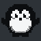

waddle / design
tema
Bruk disse navnene i UI. Rå grånivåer er for temaet selv.
grånivåer og isbre
g0 til g9 med svak blåtone. Isbre er aksenten, mørk og lys variant.
skrift
JetBrains Mono, lagret lokalt. 400 og 700, fire størrelser.
Waddle 07:42 xl 700
Vær i Oslo: 4 grader, lett regn lg 700
Brødtekst. Korte setninger, vanlige ord, ingen pynt. base 400
oppdatert 07:40 · NRK sm 400
komponenter
2px kanter, 0 eller 2px hjørner, ingen skygger. 120ms på hover og fokus.
Lagre endringene?
Neste buss går om fire minutter.
Wi-Fi
Fant ikke nettverket. Sjekk navnet og prøv igjen.
avstand
pingvin
Generert fra assets/src/penguin.txt. Mørk modus på plate, lys modus rett på papir. Skaler i hele tall.

penguin-dark.svg
penguin-light.svg
64
32
16
favicon.svgtv
CleanYourTV-temaet waddle. Morgen, kveld og natt. Natten tåler rødfilteret.


plattformer
| web | build/web/tokens.css, fonts.css, tailwind-preset.js |
| waddleos | build/waddleos/WaddleTokens.h |
| tv | build/cleanyourtv/waddle |
| hyprland | build/hyprland/waddle.conf |
| waybar | build/waybar/style.css |
| ai | skill/design-arne/SKILL.md |